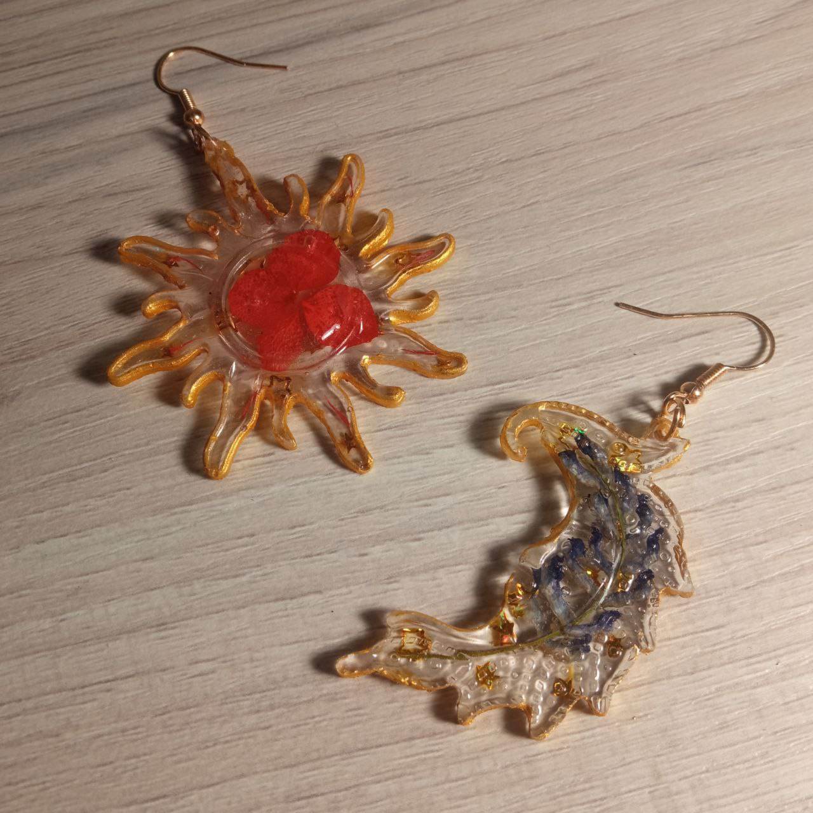

Украшаю тело времени
- Подарены моей подруге
- В Солнце использованы лепестки Гортензии
- В Месяце лежит веточка некого найденного Веточкой вьюна 
- Все подарены двум моим чудесным подругам
- В картинах с милым Мишкой и Щеглом (ЩЕГЛОМ) использованы наклейки из огромной красоты набора наклеек
- А звёздочки светятся в темноте!!


- Сделал в подарок своей подружке,, а идею украл у возлюбленной


- Подвеску я сделал совершенно случайно на смоле,, оставшейся от вареников
- Но она бы не смотрелась так хорошо без бусин,, подобранных моей возлюбленной